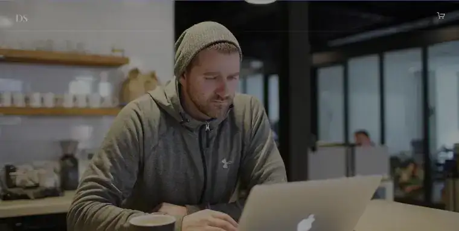
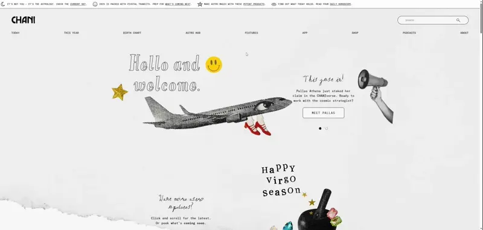
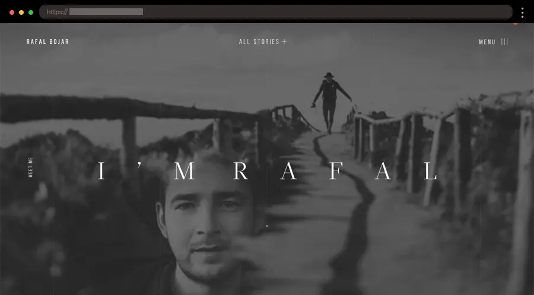
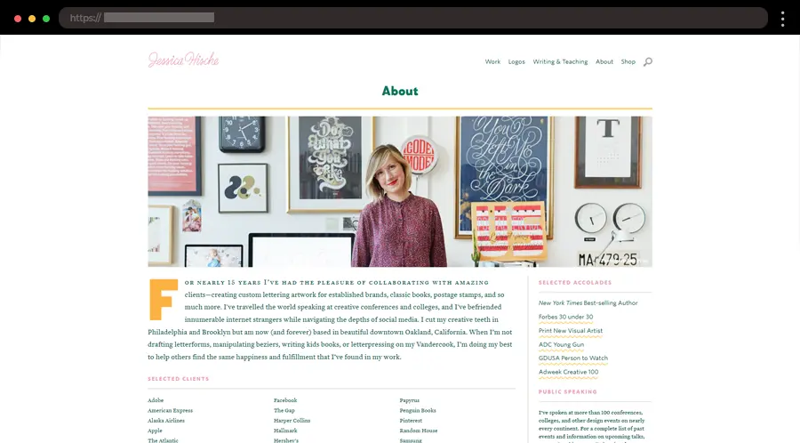

Portofolio
Joe Johnson
1. Devon Stank – Bold Squarespace Developer Webpage

I like to create bold websites for impactful brands, this reflects that energy. The clean,
minimalist design puts my work in the spotlight while making navigation effortless. It’s a simple yet powerful showcase that gets straight to the point.
2. Shanley Cox – Modern Content Creator Webpage

Made this personal website for my client Shanley Cox , her personal website is a fun mix of humor and strategy that shows off her quirky side. It’s simple but bold, with lots of white space and playful illustrations. Her site is a great read,
combining personal stories with professional highlights so you feel like you’re getting to know her instantly.
3. Rafal Bojar – Immersive Photographer About Me Design

First, I started this website with the photographer and storyteller Rafak Bojar. in this website I used high-quality images, parallax scrolling, and cursor animations for an immersive experience.
It's perfect for creatives looking to emphasize his visual storytelling.
4. Jessica Hische – Playful Lettering Artist and Designer Website

The site is a perfect reflection of my lettering and design skills. The site’s playful yet polished design lets mine work shine, with a portfolio that features my typography and illustration projects. We like the interactive elements that add a fun twist.
In Code < / >
We Trust